<!DOCTYPE HTML>
<!--
	Astral by HTML5 UP
	html5up.net | @ajlkn
	Free for personal and commercial use under the CCA 3.0 license (html5up.net/license)
-->

<html>

<head>
    <title>Kirby Cofino</title>
    <meta charset="utf-8" />
    <meta name="viewport" content="width=device-width, initial-scale=1" />
    <!--[if lte IE 8]><script src="assets/js/ie/html5shiv.js"></script><![endif]-->
    <link rel="stylesheet" href="assets/css/main.css" />
    <noscript>
        <link rel="stylesheet" href="assets/css/noscript.css" />
    </noscript>
    <!--[if lte IE 8]><link rel="stylesheet" href="assets/css/ie8.css" /><![endif]-->
</head>
<!--<body onload="myFunction()">-->
<!--<body onhashchange="myFunction()">-->


<body>
    <!-- Wrapper-->
    <div id="wrapper">

        <!-- Nav -->
        <nav id="nav">
            <a href="#me" class="icon fa-home active">
                <span>Home</span>
            </a>
            <a href="#selected_works" class="icon fa-folder-open">
                <span>Work</span>
            </a>
            <a href="#games" class="icon fa-gamepad">
                <span>Games</span>
            </a>
            <!-- <a href="#art" class="icon fa-paint-brush">
                <span>Art</span>
            </a> -->
            <a href="#contact" class="icon fa-user">
                <span>About</span>
            </a>
            <!--<a href="https://twitter.com/kgc_dev" class="icon fa-twitter"><span>Twitter</span></a>-->
        </nav>

        <!-- Main -->
        <div id="main">

            <!-- Me -->
            <article id="me" class="panel">
                <header>
                    <h1>Kirby Cofino</h1>
                    <p>
                        <!--[-->Technical Game Designer
                        <!--]-->
                    </p>
                </header>
                <a href="#selected_works" class="jumplink pic">
                    <span class="arrow icon fa-chevron-right">
                        <span>See my work</span>
                    </span>
                    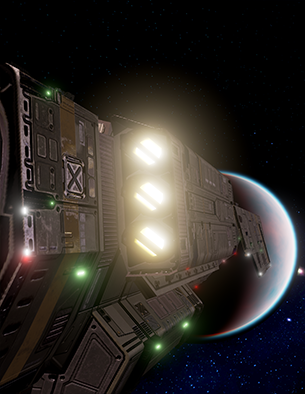
                </a>
            </article>

            <!-- Work -->
            <article id="selected_works" class="panel">
                <header>
                    <h2>Selected Works</h2>
                </header>

                <p>
                    My specialties are systems + UX design, and gameplay programming. I have a broad knowledge, but work
                    mainly with Unity3D and C#.
                </p>
                <br />
                <section>
                    <header>
                        <h3>Digital Games</h3>
                    </header>
                    <div class="inner gallery">
                        <div class="row">
                            <div class="3u 12u$(mobile)">
                                <a href="fforce.html" class="hover">
                                    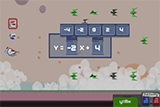
                                </a>
                            </div>
                            <div class="3u 12u$(mobile)"><a href="#games_sstrat" class="hover">
                                    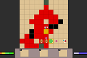</a>
                            </div>
                        </div>
                </section>
                <section>
                    <header>
                        <h3>Analogue Games</h3>
                    </header>
                    <div class="inner gallery">
                        <div class="row">
                            <div class="3u 12u$(mobile)">
                                <a href="#strife" class="hover">
                                    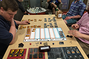
                                </a>
                            </div>
                            <div class="3u 12u$(mobile)">
                                <a href="#4Floors" class="hover">
                                    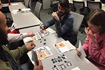
                                </a>
                            </div>
                        </div>
                    </div>
                </section>

                <section>
                    <header>
                        <h3>Digital Research Projects</h3>
                    </header>
                    <div class="inner gallery">
                        <div class="row">
                            <div class="3u 12u(mobile)">
                                <a href="#halef" class="hover">
                                    
                                </a>
                            </div>
                            <div class="3u 12u$(mobile)">
                                <a href="#summer18" class="hover">
                                    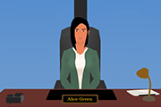
                                </a>
                            </div>
                        </div>
                </section>
            </article>

            <!-- Games -->
            <article id="games" class="panel">
                <section>
                    <div class="inner gallery">
                        <header>
                            <h2>Playable Games</h2>
                        </header>
                        <p>
                            The games below are some short project completed within the last few years.
                        </p>

                        <h3>2019</h3>
                        <div class="row">
                            <div class="3u 12u$(mobile) hover"><a href="games/sstrat_demo/index.html" target="_blank">
                                    </a>
                            </div>
                            <div class="3u 12u$(mobile) hover"><a href="games/mor_puzzle/index.html" target="_blank">
                                    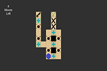</a>
                            </div>
                        </div>
                        <h3>2018</h3>
                        <div class="row">
                            <div class="3u 12u$(mobile)"><a href="games/LD42/index.html" target="_blank"
                                    class="hover"></a>
                            </div>
                            <div class="3u 12u$(mobile)"><a href="games/awe256/index.html" target="_blank"
                                    class="hover">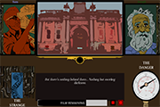</a>
                            </div>
                        </div>
                        <h3>2017</h3>
                        <div class="row">
                            <div class="3u 12u$(mobile)"><a href="games/dyh128/index.html" target="_blank"
                                    class="hover">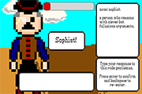</a>
                            </div>
                        </div>
                        <!-- <div class="3u 12u$(mobile)"><a href="games/cd64/index.html" target="_blank"
                                class="hover">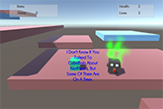</a></div> -->
                        <!-- </div> -->
                    </div>
                </section>
            </article>

            <!-- SUMMER18 #summer18 -->
            <article id="summer18" class="panel">
                <header>
                    <h2>Animation Pipeline and Tools Engineering</h2>
                </header>
                <h3>Introduction</h3>
                <p>
                    During the summer of 2018, I completed my second full-time internship with ETS out of their in San
                    Francisco office. I worked primarily alone but was supported during some parts of the learning
                    process
                    by other team members. This section details topics which builds off of work done during my first
                    year's internship.
                    You can read more about these topics on the HALEF page <a href="#halef" class="jumplink">here</a>.
                </p>
                <h3>Background</h3>
                <p>
                    The team's goals had changed with the working prototype from last summer and my tasks for the summer
                    would reflect that.
                    The new priorities were to support non-experts who wished to author new content for our system and
                    further explorations
                    into increasing fidelity while lowering file size.
                </p>
                <h3>Authoring Content</h3>
                <p>
                    Enabling non-experts to author content involved two kinds of animation pipelines, one for mouth
                    animations and one for body animations.

                    I figured we could use a kinect to do low-cost and simple DIY motion recording for the body
                    animations. After experimentation,
                    I was able to record and re-target animations from the Kinect onto different kinds of avatars.
                    However, the complexity of the process,
                    the fidelity of the output, and the size of the animation files proved prohibitive for the goals of
                    the project and it was decided to
                    continue with a traditional animation pipeline for the near future. With this knowledge I could
                    focus on other goals for the project.
                </p>
                <h3>Automating Mouth Animations</h3>
                <p>
                    For the automated lip-syncing I set out to create a script which would not 100% accurately reflect
                    the source material, but do a good enough job that it seemed believable. I chose to create a Python
                    script
                    which would take some kind of audio as input.
                    <!-- image -->
                    It would then cut that audio up into small segments and analyze the amplitude of that segment.
                    I then inserted a hook so that we could process that data in any way we need to, in this case
                    normalizing
                    and adjusting the values such that there was a smooth transition from segment to segment.
                    <!-- In the future this would be where developers could use other techniques to adjust the output for that sample. 
                        For example, if one were to use a spectrogram profile of the audio for that segment then it's possible to augment or diminish
                        the strength of the segment to match the shape a mouth would need to make to produce that sound.  For example, if we detect an "a" or "o",
                        increse the output of the sample, and an "m" or "p" profile means a decreased output. -->
                    After all the processing had finished, the script would then translate the values of the segments
                    into a
                    a .txt file (and show them visually on a graph).
                </p>
                <div class="image-wrapper">
                    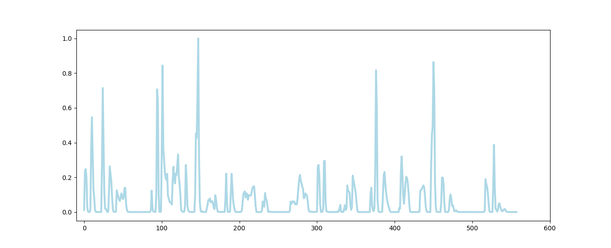
                    <p class="image-caption">
                        A graph showing the output of an audio file.
                    </p>
                </div>
                <p>
                    These values were on a normalized scale of 0-1 and would directly correlate
                    to how "open" the avatar's mouth should be during that frame. For an animation of 200 frames, there
                    would be 200 values in the document.
                    These values would then be imported into unity and read during run-time to produce realistic looking
                    mouth animations.
                    The best part about this is that anyone who can drag, drop, and double click files can now implement
                    mouth
                    animations for any avatar.
                </p>
                <!-- <div class="image-wrapper">
                            
                            <p class="image-caption">
                                A graph showing the output of an audio file.
                            </p>
                    </div> -->
                <h3>3D Asset Creation</h3>
                <p>
                    As part of the initiative to create more content I was tasked with creating an additional 3D avatar
                    for use in certain scenarios. The avatar had the same restrictions as my previous work: it had
                    to be of a low file size and web friendly. It would likely be used alongside the previous model,
                    so I used similar techniques to author content which wouldn't look out of place in a stylized
                    context.
                </p>
                <div class="image-wrapper">
                    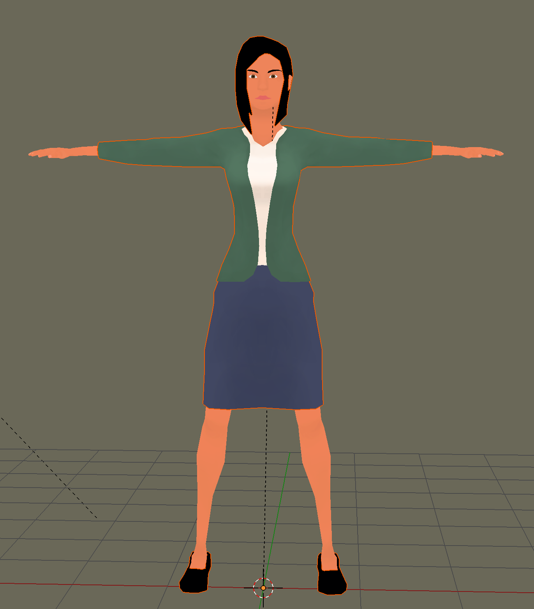
                    <p class="image-caption">
                        Alice will be used as an interactable avatar in a business setting.
                    </p>
                </div>
                <p>
                    Because my skills as a developer and artist had grown during the past year I experimented with
                    different
                    techniques to see what gave the best results. I ended up using a small texture (about 1 MB) and
                    hand-painted
                    the texture onto the avatar to allow for gradients between shading values and a higher fidelity
                    overall while still
                    maintaining a low file-size.
                </p>
                <div class="image-wrapper">
                    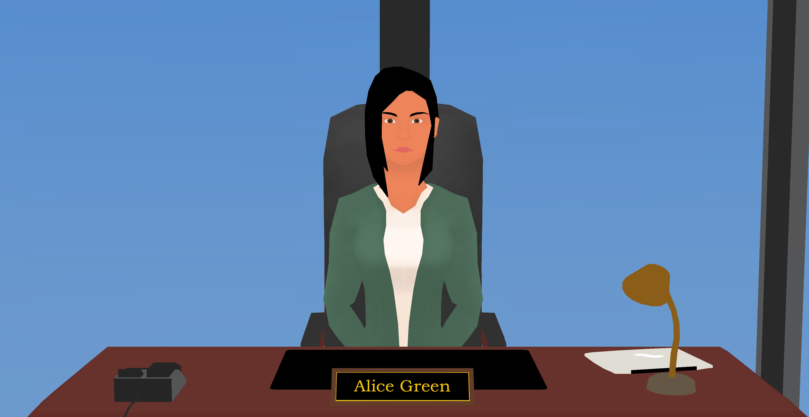
                    <p class="image-caption">
                        Alice in an office setting.
                    </p>
                </div>
                <p>
                    I also experimented with using Unity driven coroutines and IK targets to minimize
                    animation file sizes for smaller gestures like raising arms or blinking. Finally, I experimented
                    with implementing scenes using Three.JS, hoping for smaller file sizes, better web compatibility,
                    and quicker loading times, but it didn't offer much advantage over Unity.
                </p>
                <h3>Conclusion</h3>
                <p>
                    Through an expertise in javascript and python I was able to create and implement tools which
                    supported
                    project goals. My experiences with 3D art allowed me to create a stylized avatar for use in future
                    projects.
                    I was able to explore different environments and techniques including Three.JS, Unity, Motion
                    Capture
                    via the Kinect, and automated lip-syncing via coding to help further research goals and produce
                    deliverables.
                </p>
                <section>
                    <a href="#selected_works" class="jumplink pic">
                        <span class="arrow icon fa-chevron-left">
                            <span>Return</span>
                        </span>
                    </a>
                </section>
            </article>

            <!-- HALEF #halef -->
            <article id="halef" class="panel">
                <header>
                    <h2>HALEF</h2>
                </header>

                <h3>Introduction</h3>
                <p>
                    During the summer of 2017, I worked on an iteration of the HALEF system for ETS, as part of a
                    full-time internship in San
                    Francisco, California. I worked primarily alone but was supported during some parts of the learning
                    process
                    by other team members.
                </p>
                <div class="list-wrapper">
                    <smallp>
                        You can read more about the process in this research paper we published
                        <a href="https://dl.acm.org/citation.cfm?doid=3136755.3143034" target="_blank">here</a>.
                        <br /> You can read more about the experience in this interview with American University
                        <a href="https://www.american.edu/soc/news/kirby-cofino-ets-avatar-design.cfm"
                            target="_blank">here</a>.
                    </smallp>
                </div>
                <h3>Background</h3>
                <p>
                    HALEF is a multi-modal dialogue system; put simply, it is a computer system with which users can
                    interact through spoken
                    dialogue. Utilizing HALEF, it is possible to have a unique conversation with a computer.
                    <br />
                    <br /> Previous iterations of HALEF suffered from multiple issues, ranging from unacceptably long
                    load times
                    (10+ minutes); audio and animations becoming out of sync; and poor lip animations. When starting
                    work
                    on this system, I was told that the priorities were to cut down on load times and keep the project
                    open
                    source (no proprietary software/techniques). Due to the incredibly long load times, ETS was
                    considering
                    moving from Unity to other engines/javascript libraries (such as three.js)
                </p>
                <div class="image-wrapper">
                    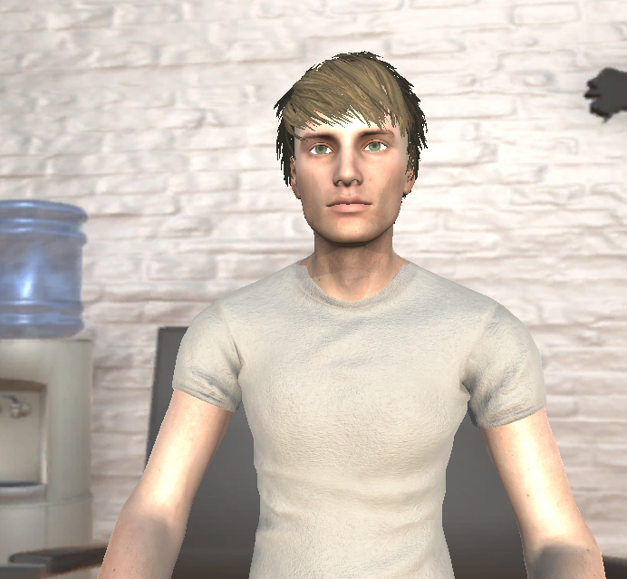
                    <p class="image-caption">
                        Previous iteration of the HALEF avatar.
                    </p>
                </div>

                <h3>Solution</h3>

                <h4>To reduce the file size:</h4>
                <p>
                    I had previously done research into mobile game applications and learned that web and mobile game
                    development were very different
                    from console or pc development. Every asset was created with its file size in mind, to reduce load
                    times,
                    leading to low poly models, 2D art, and low-resolution textures. With this in mind, I advocated for
                    a
                    low-poly 3D aesthetic, as 3D was central to the team’s future goals.
                </p>
                <div class="image-wrapper">
                    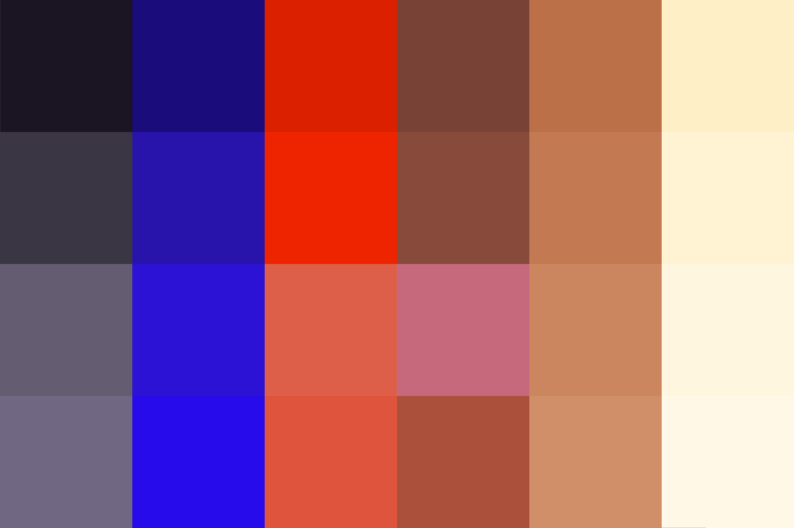
                    <p class="image-caption">
                        My texture palette for the project, a whopping 5kb on disk. A second palette was used for the
                        office itself, which was also
                        ~5kb.
                    </p>
                </div>
                <p>
                    I used Blender, an open source 3D modeling program, as well as open source libraries such as
                    Socket.IO to keep the project
                    100% open source.
                    <br />
                    <br /> Additionally, I researched ways to reduce Unity WebGL file size and possible alternative
                    solutions to
                    using Unity. Luckily, I found that there was an upgrade to Unity’s WebGL functionality (the
                    introduction
                    of engine code stripping) that helped immensely to reduce file size/load time. With the addition of
                    a
                    low-poly workplace and avatar, which I built from scratch, we were good to go. I used Blender to
                    model,
                    texture, rig, and animate the avatar.
                </p>

                <div class="image-wrapper">
                    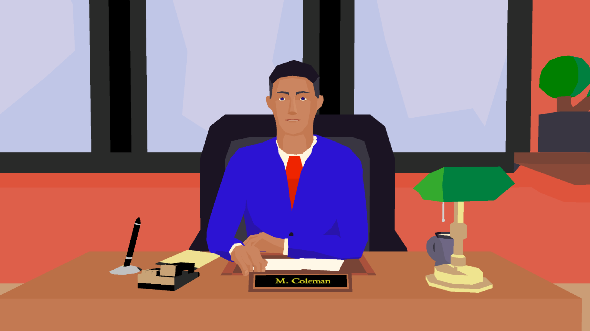
                    <p class="image-caption">
                        The low-poly feel, although unusual for a project of this nature, fit the goals and requirements
                        very well. Flat shading
                        helped pull off the look and increase performance.
                    </p>
                </div>

                <h4>
                    To eliminate latency issues:
                </h4>
                <p>
                    For the animation and sound problems, I decided that the best way to eliminate a discrepancy between
                    audio and video would
                    be to re-architect the way in which sound and animations were called.
                    <br />
                    <br /> Rather than embedding the audio in the webpage and calling for it using javascript, as the
                    previous
                    iteration had, I included the audio inside the Unity web blob. Rather than animating the avatar on
                    the
                    update loop (via blendshape normalized values called by code), as the previous iteration had I
                    controlled
                    animations by creating them in Blender and exporting them into Unity. This allowed me to play an
                    entire
                    animation with a single message, which was useful for keeping audio and video in sync.
                    <br />
                    <br /> Mouths were animated using the Papagayo + JLipSync plugin pipeline in Blender, which was a
                    perfect solution
                    for our needs. It offered a robust way to account for new dialogue, while also becoming more
                    efficient
                    the longer we used the same models. This is because it works by setting up phoneme shapes, such as
                    'o',
                    or 'L', and interpolating values between those mouth shapes (rather than hand animating every mouth
                    movement).
                </p>
                <div class="image-wrapper">
                    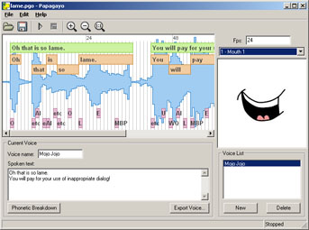
                    <p class="image-caption">
                        Papagayo is used to insert keyframes for mouth movement via an intuitive GUI.
                    </p>
                </div>
                <p>
                    Because I fundamentally changed the way in which the HALEF system interacts with the Unity web blob
                    (due to my flow re-architecture
                    and the Unity issued updated WebGL format) I had to change how messages were passed to the different
                    parts of the system.
                </p>
                <div class="image-wrapper">
                    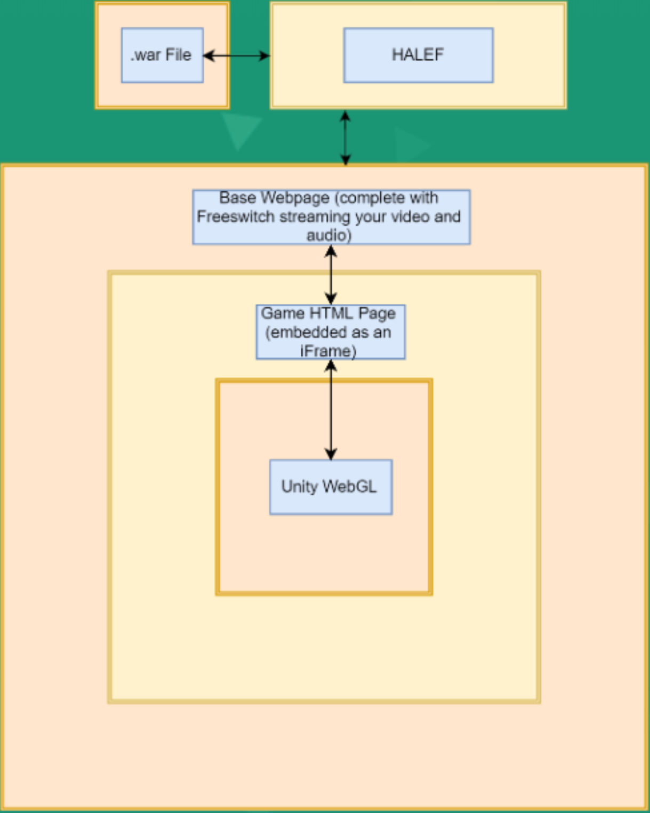
                    <br />
                    <p class="image-caption">
                        The Unity web blob lives inside the client's browser page via websocket messaging it interacts
                        with the server, which reads
                        the scenario from a unique conversation file.
                    </p>
                </div>
                <p>
                    I first added hooks in the Unity web blob which could be accessed via javascript run on the HTML
                    page, then I had the system
                    pass a message to Unity depending on its status through the javascript running on the HTML page.
                </p>

                <div class="image-wrapper">
                    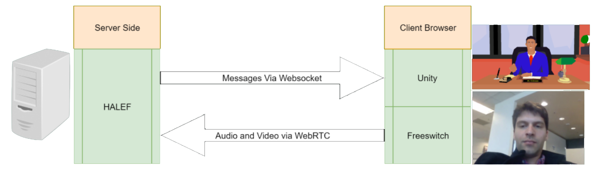
                    <br />
                    <p class="image-caption">
                        The system feedback loop is illustrated here. HALEF (the system) outputs phrases to Unity to
                        represent it's decisions to
                        the user. The user responded, which was carried back to HALEF via the freeswitch platform, etc.
                    </p>
                </div>

                <p>
                    By doing so I could tell HALEF to pass a message to Unity, which would fire both the necessary
                    animation and play the necessary
                    audio, eliminating any possibility for desynchronizing.
                </p>
                <h3>Result</h3>
                <p>
                    Doing the above, I developed a working, low load-time application, complete with a decent looking 3D
                    model. It was an incredible
                    experience to be able to immerse myself in that pipeline, which was almost entirely new to me, while
                    thinking critically about how each part affected the final product, and what I could do to eliminate
                    the bugs in the previous iteration.
                </p>

                <section>
                    <a href="#selected_works" class="jumplink pic">
                        <span class="arrow icon fa-chevron-left">
                            <span>Return</span>
                        </span>
                    </a>
                </section>
            </article>

            <!-- 4F -->
            <article id="4Floors" class="panel">
                <header>
                    <h2>4 Floors</h2>
                </header>

                <h3>Concept</h3>
                <p>
                    4 Floors was conceived as a way to adapt a side-scroller with RPG elements to a tabletop format.
                    Some core goals of the game
                    were accessibility to non-gamers and cooperative multiplayer gameplay.
                    <br />
                    <br /> 4 Floors was developed in 3 weeks in 2016 with a team of 2 people: myself on systems design
                    and my teammate
                    on art and graphic design.
                </p>
                <h3>Execution</h3>
                <p>
                    Because I was designing for tabletop, simplicity was a core guiding principle. The game had to be
                    usable and the mechanics
                    learnable. Analogue games tend to be more successful with simpler and fewer rules (computers aren’t
                    there
                    to walk players through the game and calculate all the different equations for them). Additionally,
                    this
                    game was meant to be accessible to newer players or players who weren’t too interested in heavy
                    calculations
                    and obscure rules.
                    <br />
                    <br /> In light of this, I had only a few rules- players started the game on the left side of the
                    board, and
                    if they made it to the right side, then they won. Simple, right?
                </p>
                <div class="image-wrapper">
                    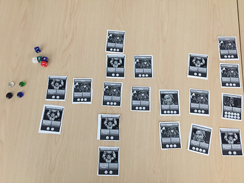
                    <p class="image-caption">
                        First iteration of 4 Floors. The board setup afforded some fantastic design opportunities, but
                        also created problems.
                    </p>
                </div>
                <p>
                    Players would take on 2 columns of enemies at a time. Ranged units from the players’ party or the
                    monsters’ party could attack
                    from the 2nd column, but melee units could only hit the column directly in front of them. By using
                    skills
                    smartly it was possible to damage groups that you couldn't reach at the moment due to attacks that
                    spanned
                    2 columns.
                    <br />
                    <br /> By making it to the last row players could fight and defeat a boss monster to win the game.
                </p>
                <div class="image-wrapper">
                    
                    <p class="image-caption">
                        First iteration of 4 Floors with zones defined. The red divider indicates max interaction range
                        (without unique skill exceptions).
                    </p>
                </div>
                <h3>Dilemma</h3>
                <p>
                    Feedback indicated that our system for randomly generating columns (through dice rolls) was
                    imbalanced, leading to unnecessarily
                    difficult situations. For example, it was very difficult to deal with a column of 5 units in front
                    of
                    a column of 5 ranged units.
                    <br />
                    <br /> Another core piece of feedback was that there was not much variation in combat. There were 2,
                    perhaps
                    3, types of enemies which acted similarly. People were interested in an expanded bestiary.
                </p>
                <h3>Solution</h3>
                <h4>Enemy Group Size</h4>
                <p>
                    To deal with these issues, I decided to expand upon the narrative of the game and introduce new
                    enemies. I had been inspired
                    by ‘A Pattern Language’ by Christopher Alexander, a book about how architecture and intentional
                    design
                    can affect our everyday lives for the better, which got me thinking about how spaces in games can
                    affect
                    gameplay. In this case, it led me to introduce a room based combat system.
                </p>
                <div class="image-wrapper">
                    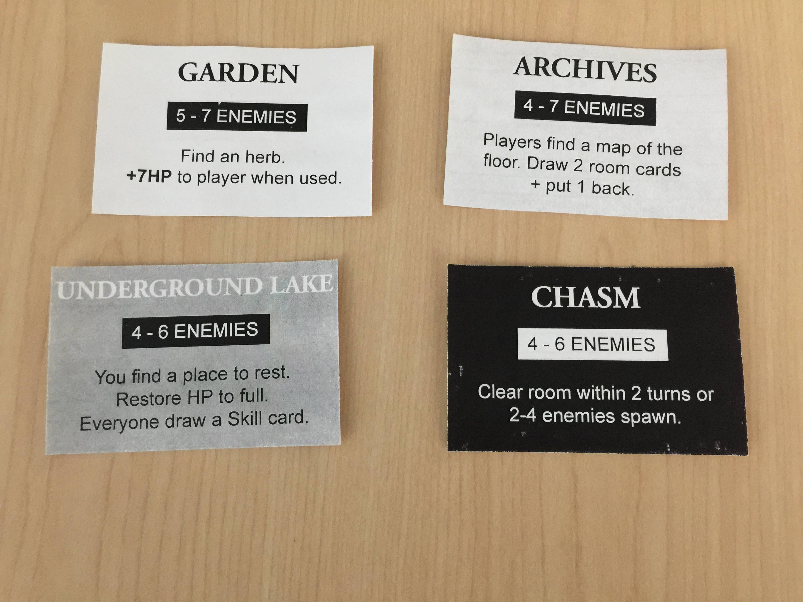
                    <p class="image-caption">
                        Players now draw a random 'room' card from the 'room' deck. This will tell players how many
                        monsters will be in the room,
                        as well as any additional effects or bonuses the room provides.
                    </p>
                </div>

                <p>
                    Room-based exploration was important in a few ways, the first being that a room’s size will limit
                    the number of creatures
                    contained within it. Instead of every encounter having the possibility of a brutal number of
                    enemies,
                    staging these encounters inside a limited space allowed me to dictate what range of enemies players
                    would
                    face at a time. This was important for normalizing difficulty across all encounters. Finally, this
                    change
                    also was helpful for learnability and usability of the system-- players could see only what they
                    could
                    interact with at that moment.
                </p>
                <div class="image-wrapper">
                    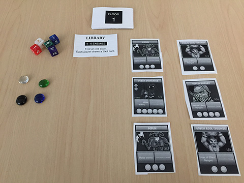
                    <p class="image-caption">
                        Using rooms helped to teach the game to players, as well as clearly define the difficulty curve
                        of the game.
                    </p>
                </div>
                <h4>Combat Additions</h4>
                <p>
                    Players wanted different kinds of enemies, which required different approaches to combat for
                    success. To address this pleasure
                    point I decided to include a more robust progression system, to give players more tools to work
                    with,
                    as well as an increased variety in enemies, to facilitate the use of these tools.
                </p>
                <div class="image-wrapper">
                    
                    <p class="image-caption">
                        New, varied enemy types. Some deal damage per turn, some require being taken out from full HP in
                        a single turn or they heal,
                        etc.
                    </p>
                </div>
                <p>
                    New types of enemies were introduced which required different methods to overcome. This was tied
                    into difficulty and progression
                    through use of a 'floor' system. Players would clear a certain number of rooms per floor, fight a
                    boss,
                    then advance to the next floor. Later floors were more difficult and rewarding, allowing for me to
                    design
                    obstacles for different stages of character progression. For simplicity, I designed all special
                    monster
                    abilities to activate on rolls of 5 or 6. Sharing this across all enemy types help learnability and
                    ease
                    of use.
                </p>
                <h4>Player Progression</h4>
                <p>
                    To deal with more powerful enemies and increase player engagement I updated character design with
                    unique abilities and mechanics
                    per class. Every player would have 'skill cards' which allowed single use, powerful abilities to be
                    activated.
                    Depending on which skill card was drawn players would have access to different abilities. This was
                    done
                    to limit player options and to encourage spontaneous and explorative play.
                </p>
                <div class="image-wrapper">
                    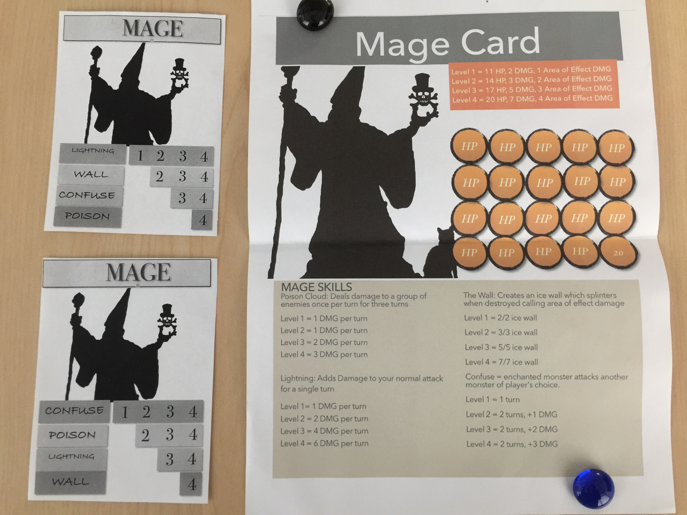
                    <p class="image-caption">
                        New, re-designed character sheets and progression system. The skill cards show which skills are
                        gained upon increasing in
                        level.
                    </p>
                </div>
                <p>
                    In addition to this, I included items which helped to customize characters and shore up weaknesses
                    or emphasize strengths
                    differently in each playthrough. Players would draw a random item from the item deck if certain
                    conditions
                    were met, such as defeating a boss. Players could trade items to support cooperative play.
                </p>
                <div class="image-wrapper">
                    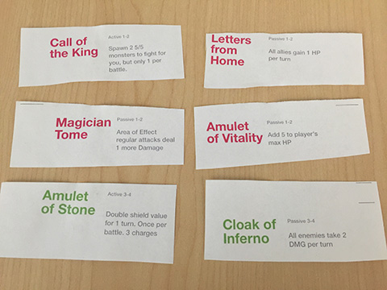
                    <p class="image-caption">
                        Items were gained from accomplishing feats and had many uses.
                    </p>
                </div>
                <h3>Conclusion</h3>
                <p>
                    By adding more content and refining existing mechanics, I shaped player options and increased both
                    the depth and amount of
                    options available to players.
                    <br />
                    <br /> Personally, I feel the game successfully conveyed an interesting take on a cooperative
                    side-scroller
                    experience while also containing dungeon crawling and RPG elements. I would love to revisit the
                    horizontal
                    nature of initial iteration at some point, however, I feel that there were many problems, such as
                    learnability
                    and clarity, that were improved with the move towards a room based system. It was definitely fun to
                    design
                    a dungeon crawling tabletop RPG.
                </p>

                <section>
                    <div>
                        <a href="#selected_works" class="jumplink pic">
                            <span class="arrow icon fa-chevron-left">
                                <span>Return</span>
                            </span>
                        </a>
                    </div>
                </section>
            </article>

            <!-- Strife! -->
            <article id="strife" class="panel">
                <header>
                    <h2>Strife!</h2>
                </header>

                <h3>Introduction</h3>
                <p>
                    Strife! was my capstone project for my MA in Game Design at American University. We had 3 and a half
                    months to create a project
                    from scratch, team size was a single person.
                    <br />
                </p>
                <h3>Background</h3>
                <p>
                    I’d been playing a lot of card games like Hearthstone and The Elder Scrolls: Legends at that point
                    in my life, so I decided
                    to create a CCG-like game, however, I didn’t think the world needed another Magic clone(!), so I
                    purposefully
                    made it mechanically distinct. Strife! is at heart an experimental mix of a board game and a CCG. I
                    combined
                    the Strategy game and Card Game genres to create something new and exciting.
                    <br />
                </p>
                <h3>Process</h3>
                <p>
                    The main inspiration for Strife! came from the RTS and CCG genres. To start, I decided to map out a
                    list of elements in both
                    of these genres, then try to find commonalities. From there I chose which of those elements were
                    most
                    important, and which were less so.
                </p>

                <div class="image-wrapper">
                    <a href="images/strife/proto.jpeg" target="_blank" class="rotated-image-link">
                        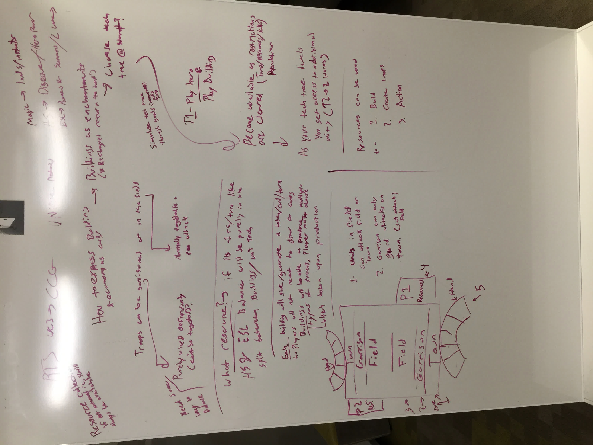
                    </a>
                    <p class="image-caption">
                        One early document, among many, to refine the design. Feel free to open it in a new tab for a
                        larger image.
                    </p>
                </div>
                <p>
                    With a core direction defined, I could start brainstorming ways to mechanically represent them. I
                    ended up focusing on a
                    spatial element of multiple ‘zones’. Additionally, I decided to reduce uncertainty by giving players
                    the ability to always have access to any units they’ve unlocked, throughout the game. This was meant
                    to also act as an homage to the tech trees in strategy games.
                </p>
                <div class="image-wrapper">
                    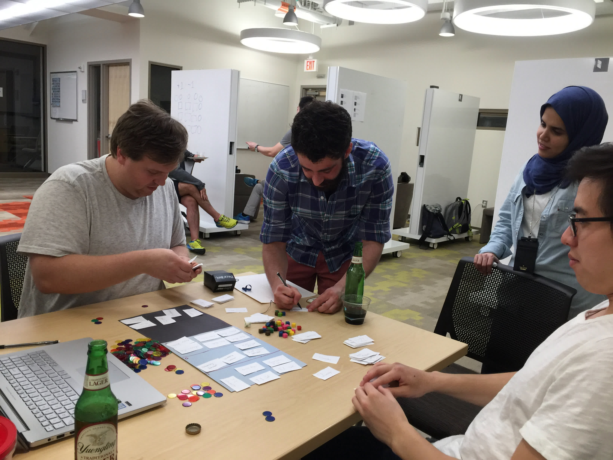
                    <p class="image-caption">
                        A playtest for an early version of Strife!
                    </p>
                </div>
                <p>
                    Finally, I created some units and abilities to populate the game and playtested. After each playtest
                    I would use notes to
                    refine and adjust the balance of the game until it felt like a stable, dynamic, and exciting
                    experience.
                </p>
                <div class="image-wrapper">
                    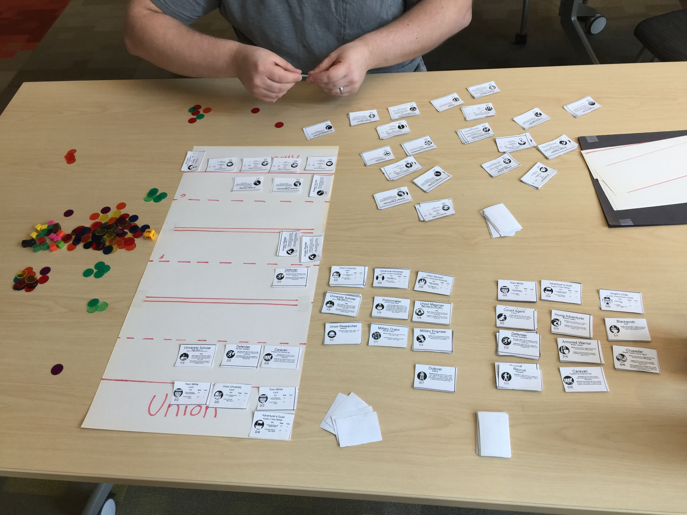
                    <p class="image-caption">
                        Getting to play with cards which had the stats and abilities printed on them was a milestone for
                        me, and fantastic for people
                        trying to pick up the game.
                    </p>
                </div>

                <h3>Rules</h3>
                <p>
                    To get a feel for the game, I’ll give an overview of the rules. Each player can construct buildings,
                    these buildings can
                    spawn units. Buildings and units need one turn to get ready before they can be used. Units can use
                    abilities,
                    attack, and move. Possible targets for offensive actions are other player’s buildings, units, and
                    the
                    other player themselves. Destroying buildings is a way to damage your opponents economy. There’s
                    also
                    a deck of powerful abilities which are obtained by producing structures.
                </p>
                <div class="image-wrapper">
                    
                    <p class="image-caption">
                        A sample building. Front side is on the left, the back side is on the right.
                    </p>
                </div>

                <h3>Dilemmas</h3>
                <p>
                    Throughout all phases of development, Strife! suffered from pacing issues. Many of the earlier
                    iterations’ games would last
                    multiple hours with lulls where players wouldn’t meaningfully interact with each other. Finally,
                    there
                    were huge issues with the amount of complexity present in both the rules of the game and the unit
                    abilities.
                </p>

                <h3>Solutions for Pacing</h3>
                <p>
                    The mechanics of the game caused the slow pace of the game. Although I did like the core ideas of
                    representing space via
                    multiple zones, as well as a tech tree players could progress on, their implementation left the game
                    feeling stale and unengaging. There were a large number of zones players had to progress through
                    before
                    they could either damage a player’s health or economy, additionally, because moving used up that
                    unit’s
                    actions for the turn, the defending player would always have the choice of what to trade for what.
                    This
                    made defensive play incredibly strong.
                </p>
                <div class="image-wrapper">
                    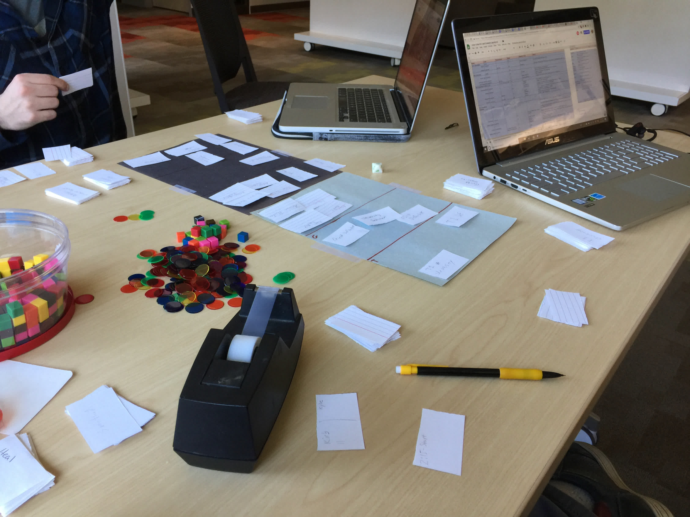
                    <p class="image-caption">
                        An early playtest. Playing with index cards and spreadsheets did not help games to move quickly.
                        Many times players would
                        spend minutes consulting the spreadsheet before taking their move.
                    </p>
                </div>
                <p>
                    Through playtesting, I settled upon using three zones, rather than 4, 6, or 8. Additionally, I
                    allowed units to both use
                    an ability and move to a different zone each turn to allow for the aggressive player to choose what
                    trades
                    they’d like to take. I also specified a cap of 6 units per zone, to stop players from stockpiling
                    units,
                    creating an impenetrable wall of bodies. Finally, I linked board options to economic strength by way
                    of giving players a strong, randomized ability with every building constructed.
                </p>
                <div class="image-wrapper">
                    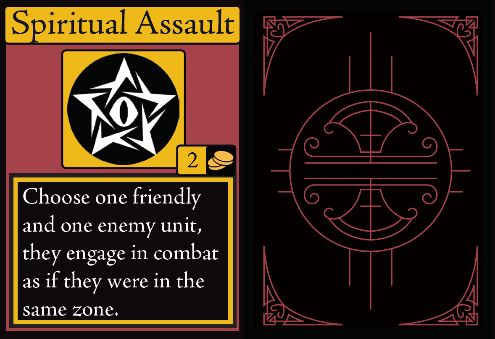
                    <p class="image-caption">
                        A sample ability card which can be drawn from the Ansari deck. Spiritual Assault allows players
                        to target high value, difficult
                        to engage targets and take them out of the game.
                    </p>
                </div>
                <p>
                    In terms of economics, originally the game had ways to invest into economy, by building structures
                    which boost gold gain
                    per turn. I wanted to allow players to play greedy and take risks for a greater payout later.
                    However,
                    due to the defensive nature of the game, building these structures was always the correct move. I
                    eventually
                    settled upon taking them out of the game, giving players a free structure each turn, and the ability
                    to build a second one for gold. This allowed players to invest in an immediate advantage, in the
                    form
                    of units on the board, or an economic advantage, in the form of buildings.
                </p>
                <div class="image-wrapper">
                    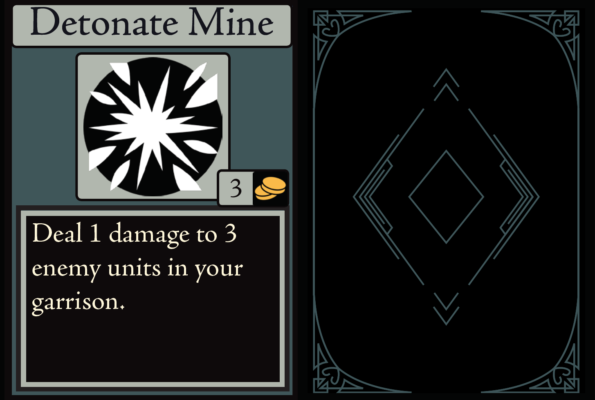
                    <p class="image-caption">
                        A sample ability card which can be drawn from the Union deck. Detonate Mine allows players to
                        defend against aggressive plays.
                        This is especially key for the Union, who are generally weaker in the early game.
                    </p>
                </div>

                <h3>Solutions for Complexity</h3>
                <p>
                    For most of playtesting, users playtested with torn up index cards and spreadsheets off to the side.
                    Many complained that
                    it was hard to understand which units could do what, and with tech trees being in the game, many
                    didn’t
                    know what units they were progressing towards.
                </p>
                <div class="image-wrapper">
                    
                    <p class="image-caption">
                        This is part of a larger tech tree sheet for the Union faction. By presenting this information
                        in an easy to parse way, I
                        helped keep players engaged and increased the pace of the game for newer players.
                    </p>
                </div>
                <p>
                    During the last two weeks of development, I spent my time looking at the pieces from a UX
                    perspective. I did interviews to
                    figure out what kinds of things people wanted on cards, problems they faced, what they liked about
                    the
                    game, etc. Using this information I created multiple mock-ups, focusing on both which information
                    should
                    be included on the pieces, as well as how it’s included. I tested different icons, text, and shared
                    terminology
                    to help users onboard quickly.
                </p>
                <div class="image-wrapper">
                    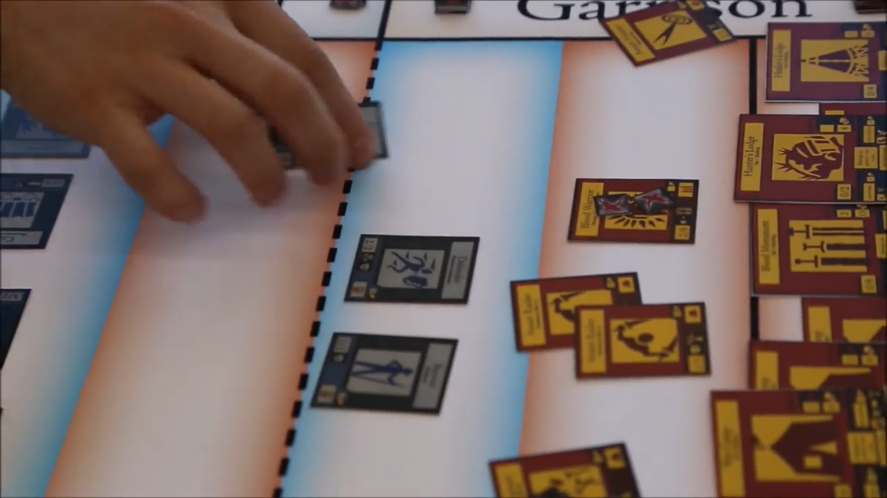
                    <p class="image-caption">
                        An example of how the board looks with custom art and directions printed on the cards
                        themselves.
                    </p>
                </div>

                <h3>Conclusion</h3>
                <p>
                    I learned a great deal by developing Strife! First off, one of the ideas I wanted to play around
                    with was to do what I could
                    to remove randomness from the game. Doing so, in the way that I did, actually made the game static
                    and
                    unengaging. By allowing for players to always be able to do any action, it takes away the
                    developer’s
                    ability to make the actions exciting and powerful. The more situational and undependable a play is,
                    the
                    more liberty we have, as designers, to make it strong and exciting.
                </p>
                <p>
                    There were many other lessons, but ultimately, this was the most important to me. I feel like
                    Strife! failed in many ways:
                    I had to reintroduce chance, and games take too long, however, I also
                    succeeded in making a unique, deep, and fun game. Because of this, and what I’ve learned from the
                    project,
                    I consider the game a success.
                </p>
                <div class="image-wrapper">
                    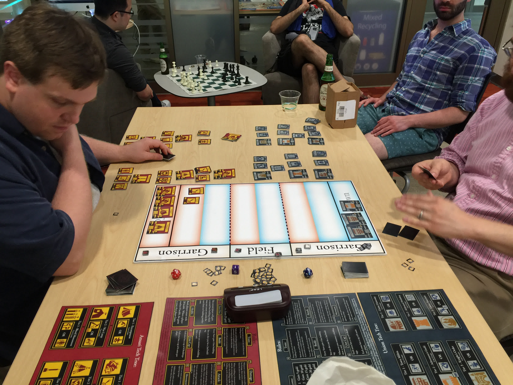
                    <p class="image-caption">
                        The current iteration of Strife! Players are enjoying a round of speed Strife!, which pleases me
                        greatly!
                        <br /> You can find the trailer
                        <a href="https://youtu.be/DRMdcQ7LjWA" target="_blank">here</a>.
                    </p>
                </div>
                <section>
                    <div>
                        <a href="#selected_works" class="jumplink pic">
                            <span class="arrow icon fa-chevron-left">
                                <span>Return</span>
                            </span>
                        </a>
                    </div>
                </section>
            </article>

            <!-- GAMES -->
            <!-- Grid Combat! -->
            <article id="games_sstrat" class="panel">

                <section>
                    <header class="flex-container">
                        <h2 class="mr-auto">Grid Combat</h2>

                        <div class="centered-row-image image-wrapper no-m"><a href="games/sstrat_demo/index.html"
                                target="_blank">
                                </a>
                            <p class="no-m al-cent">
                                <a href="games/sstrat_demo/index.html" target="_blank"> play here!</a>
                            </p>
                        </div>
                    </header>
                    <h3>Introduction</h3>
                    <p>
                        This project was an exercise in quickly prototyping out an idea in code while also using design
                        patterns and C# best practices to write strong extensible logic. I introduced appropriate
                        patterns wherever possible while trying to also keep the codebase as light as possible. It took
                        me about 3 months of 10 hours a week.<a class="jumplink"
                            href="https://github.com/kgc00/pathfinding_demo" target="_blank"> Please feel free to check
                            out the codebase here</a>.
                    </p>
                    <h3>Achievements/Overview</h3>
                    <p>There's a lot to say about this prototype, however, for brevity's sake I'll just detail the
                        pathfinding system and the state system as
                        they respectively motivated me to start the project and were one of my favorite take-aways.
                    </p>
                    <p>
                        I'll just give a brief mention of the major systems I won't be covering,
                        but which are included in the codebase before we jump in:
                    </p>
                    <div class="list-wrapper">
                        <smallp>-A persistent world which remembers character stats, world state (progression), and area
                            state beyond instance destruction. Achieved via storing/reading data from scriptable
                            objects.
                        </smallp>
                        <smallp>-A tool for building, loading and saving levels in Unity</smallp>
                        <smallp>-A modular ability system accessed through an AbilityComponent wrapper</smallp>
                        <smallp>-Tooltips/UI populated by current player data</smallp>
                        <smallp>-Multiple enemy types with unique AI</smallp>
                        <smallp>-An entire hierarchy generated entirely by dependency injection </smallp>
                        <smallp>-An event queue system which funnels low-level events to
                            high-level classes that care about those events
                        </smallp>
                    </div>
                    <h3>Pathfinding System</h3>

                    <p>This game features grid based combat in real-time with multiple units. This design required a
                        specialized implementation for pathfinding which differentiates it from other systems
                        used in turn based strategy games or in action games. I started with a great template found
                        <a href="http://theliquidfire.com/2015/06/08/tactics-rpg-path-finding/" class="jumplink"
                            target="_blank">here</a> and modified it it meet my needs.</p>

                    <h4>Dilemma</h4>
                    <p>In turn based strategy games, such as Fire Emblem, there can only ever be one request at a time.
                        Because of this, it is completely safe and desirable to store the results of the request on the
                        tiles themselves. We can calculate everything once, and until a new type of request is
                        issued, we just keep referencing the same old results. However, in a game where multiple units
                        need to simultaneously issue requests to the pathfinding system, we cannot directly store our
                        results on the nodes. Think of this- one unit requests data and starts to move, another unit
                        requests a different path- all the data the first unit is using to traverse the map is now
                        replaced with a different request's results. This could cause all kinds of bugs to seep in due
                        to the subtle of sharing data between requests.</p>

                    <h4>Classes</h4>
                    <p>My solution was to keep a
                        reference to the actual board, but encapsulate all data related to the pathfinding algorithm in
                        it's own class called a ShadowTile. Requests would then return both the tile and it's shadow
                        which contains instanced results of a search of the board. By separating out the results of the
                        request from the actual objects which exist in the world (shadow tile/tile separation) we can be
                        sure that requests will be sufficiently insular.</p>

                    <div class="image-wrapper">
                        
                        <p class="image-caption">
                            Tile and ShadowTile UML Class diagrams
                        </p>
                    </div>

                    <p>Requests are initiated by classes via accessing a board's pathfinding component. The method used
                        to initiate a search accepts a function as
                        an argument which is used to determine whether or not a
                        tile should be considered a valid target. </p>

                    <pre class="code">
// BoardPathfinding.cs
// The search method we query
public List<PathfindingData> Search (Tile start, Func<ShadowTile, Tile, bool> addTile) {
    ...
}

// ConstantRange.cs
// An example query
public override List<PathfindingData> GetTilesInRange () {
    var retValue = pathfinding.Search (board.TileAt (Owner.transform.position.ToPoint ()), ExpandSearch);
    ...
}
</pre>
                    <p>For example, a LinearRange
                        component’s ExpandSearch method looks like this:</p>
                    <pre class="code">
// LinearRange.cs
// Only add tiles which share the same X or Y as the owner object
bool ExpandSearch (ShadowTile from, Tile to) {
    var ownerPos = Owner.transform.position.ToPoint ();

    return (ownerPos.y == to.Position.y ||
            ownerPos.x == to.Position.x) &&
        (from.distance + 1) <= range;
}</pre>
                    <p>while a ConstantRange component’s ExpandSearch method looks like this:</p>

                    <pre class="code">
// ConstantRange.cs
// Add all walkable tiles in range
bool ExpandSearch (ShadowTile from, Tile to) {
    return (from.Distance + 1) <= range && to.isWalkable;
}</pre>
                    <p>Passing in functions which determine the logic of the algorithm at run time is called the
                        strategy pattern.
                        It helps to keep the algorithm generic and re-usable by encapsulating specific requirements in
                        functions which
                        can be swapped out for each other. By using inheritance smartly and using the strategy design
                        pattern to determine which tiles are
                        valid, we can easily create new types of RangeComponent with little effort.
                    </p>

                    <div class="image-wrapper">
                        
                        <p class="image-caption">
                            RangeComponent UML Class diagrams
                        </p>
                    </div>

                    <p>I’ve also included builder methods so that I can update old RangeComponent where/when needed,
                        rather than instantiating whole new classes/objects. This comes in particularly useful for a
                        RangeUtil helper class I’ve made for miscellaneous common scenarios, such as calculating the
                        Area of Effect of an impact or finding the range of all tiles from a certain position. These
                        scenarios are useful for Area of Effect abilities and AI respectfully.</p>

                    <p>As an aside, we keep
                        the Owner property as a GameObject rather than a Unit to allow for instantiating and using empty
                        gameobjects as a base from which to calculate range
                        for things like an ability's Area of Effect radius upon impact at an arbitrary location.</p>

                    <h4>Algorithm</h4>
                    <p>I chose to go with an algorithm for pathfinding which doesn’t use a destination; it just moves
                        away from the starting tile grabbing every tile it can until there are no valid moves left.
                        Because I need to show players which tiles are valid moves I will not know the destination tile
                        when I calculate the request. It feels very wasteful to use something like an A* algorithm
                        because I’d have to dispatch x requests where x is the number of tiles which are theoretically
                        in range and therefore can act as a destination. With this implementation I only need dispatch
                        one request.</p>


                    <p>Below is the flow for a standard request where a unit wants to see all of the valid moves
                        available for a single ability. Abilities are referenced through a level of abstraction via the
                        AbilityComponent which provides a generic interface through which units can set, update, and
                        activate any abilities they are equipped with.
                    </p>

                    <div class="image-wrapper">
                        
                        <p class="image-caption">
                            Pathfinding request UML collaboration diagram
                        </p>
                    </div>

                    <h3>State System</h3>
                    <h4>Overview</h4>
                    <p>Taking inspiration from <a href="https://gameprogrammingpatterns.com/state.html" class="jumplink"
                            target="_blank">here</a> I implemented a state
                        pattern for some of the more… stateful logic of the game. This pattern is used to restrict what
                        kinds of logic or input governs an actor at a given point in time. For example, when a unit is
                        idle in a strategy game, the player can click on it to select it and control it, but cannot
                        issue commands to that unit without selecting it first. The idle state and selected state could
                        each be their own classes which encapsulate all requisite commands and limitations for a state.
                    </p>
                    <h4>UnitState Classes</h4>
                    <p>
                        I implemented a state pattern to handle similar logic for both my playable character and AI
                        units. I would have liked to use a single UnitState class, but found the needs for the two
                        classes were so different I ended up splitting AI/Player state into two separate child classes.
                        Below is a class diagram which depicts the parent UnitState and a child PlayerUpdateState
                    </p>
                    <div class="image-wrapper">
                        
                        <p class="image-caption">
                            UnitState UML class diagram
                        </p>
                    </div>
                    <p>There really isn't much boilerplate there which makes this pattern simple to implement. And as
                        you can see,
                        because each child doesn't need to extend much logic we can make each state class fairly
                        specialized to handle
                        whatever it needs to using events or added functions.
                    </p>
                    <h4>Flow</h4>
                    <p>
                        Every Unit contains a very simple update loop shown below:
                    </p>

                    <pre class="code">
// Unit.cs
protected virtual void Update () {
    ...
    // if we returned a new state switch to it
    UnitState state = UnitState?.HandleInput (controller);
    if (state == null)
        return;

    // if we're in a new state, call the enter method before any HandleInput calls
    UnitState = state;
    UnitState.Enter ();
}
</pre>
                    <p>Every frame we call the HandleInput() method on our UnitState property. This function will
                        return either null, in which case we do nothing, or a new UnitState, in which case we update our
                        Unit's property to reference to this new object.
                        The beauty of this loop is that it creates a kind of feedback loop where, the class will manage
                        itself.
                    </p>


                    <p>Below is a concrete implementation of this, the PlayerIdle state:</p>
                    <pre class="code">
// PlayerIdleState.cs
public override UnitState HandleInput (Controller controller) {
    // define our list of acceptable input for this frame and state
    bool[] pressed = new bool[] {
        controller.DetectInputFor (ControlTypes.ABILITY_ONE),
        controller.DetectInputFor (ControlTypes.ABILITY_TWO),
        controller.DetectInputFor (ControlTypes.ABILITY_THREE),
    };

    // loop through them and see if any have been pressed...
    for (int i = 0; i < pressed.Length; i++) {
        if (!pressed[i])
            continue;

        // transition to the next state with that data
        if (abilityComponent.SetCurrentAbility (i)) {
            onAbilitySet (Owner, i);
            return new PlayerPrepState (Owner);
        }
    }

    return null;
}
</pre>
                    <p>
                        The entire class is fairly small, just 30 or so lines total, which is another benefit of
                        using this pattern: it breaks larger systems up into manageable chunks. In this game's context
                        to state flow ends up looking like so:
                    </p>
                    <div class="image-wrapper">
                        
                        <p class="image-caption">
                            The complete flow diagram of the UnitState system.
                        </p>
                    </div>
                    <p>
                        I love the elegance and simplicity of this pattern. It turns complex systems like handling
                        player input from a web of if statements to a series of self-contained, flexible classes.
                    </p>
                    <p>For some classes which rely on external systems, like the ActingState, we use a callback to
                        notify the class when it should return a CooldownState object, rather than null.
                    </p>
                    <pre class="code">
//PlayerActingState.cs
...
UnitState state;
...

public override void Enter () {
    // activate the selected ability
    abilityComponent.ActivateWithCallback ((cooldownDuration) => this.UpdateState (cooldownDuration));
    ...
}

// return ActingState until ability finishes and updatestate is called;
public override UnitState HandleInput (Controller controller) { return state; }

// transition to next state
public void UpdateState (float cooldownDuration) { state = new PlayerCooldownState (Owner, cooldownDuration); }
</pre>
                    <h4>AreaState Classes</h4>
                    <p>
                        I also found this pattern also useful in other cases. I implemented the state pattern to the
                        Area class itself
                    </p>
                    <pre class="code">
// SetupState.cs
public override void Enter () {
    ...

    // Initialize resources and handle loading...
    InitializeResources (entrances, min, max);
    SetPlayerPosition (entrances, min, max);
    SetPlayerData ();
    FinishLoading ();
}

public void AdvanceAreaState () {
    this.shouldAdvanceState = true;
}

public override AreaState HandleUpdate () {
    if (shouldAdvanceState) return new ActiveState (area, tracker);

    return null;
}
</pre>
                    <p>Because the class doesn't respond to input, I moved all logic to the Enter() method and used an
                        event system to trigger an update in state depending on the player's actions.
                        Below is the complete code of the PlayerActing state, it will advance the area's state
                        to ActiveState the first time the player commits an action.
                    </p>
                    <pre class="code">
//PlayerActingState.cs
public override void Enter () {
    // call the ability's start method
    abilityComponent.ActivateWithCallback ((cooldownDuration) => this.UpdateState (cooldownDuration));
    if (Owner is Hero) {
        EventQueue.AddEvent (new AreaStateChangeEventArgs (Owner, null, AreaStateTypes.Active));
    }
}
</pre>
                    <p>We do this to delay all AI actions until the player has acted
                        to help the player
                        adjust to the new area and not feel overwhelmed by enemies immediately rushing them down. By
                        using a state based system in the area this
                        is easily achieved. Below is the corresponding receiver of the AreaStateChangeEventArgs
                    </p>
                    <pre class="code">
// Area.cs
public void HandleIncomingEvent (InfoEventArgs curEvent) {
    switch (curEvent.type.eventType) {
        case EventTypes.StateChangeEvent:
            if (state is SetupState) {
                SetupState curState = (SetupState) state;
                curState.AdvanceAreaState ();
            }
            break;
        default:
            break;
    }
}
</pre>
                    <p>And the enter method of the active state:</p>
                    <pre class="code">
// ActiveState.cs
public override void Enter () {
    // hero is initialized on the setup state, we initialize every other type here
    var enemies = area.Board.Units.Where (unit => unit.Value.TypeReference != UnitTypes.HERO);

    foreach (var unit in enemies) {
        area.Board.UnitFactory.ActivateEnemyAt (unit.Key);
    }
}
</pre>
                    <h3>Conclusion</h3>
                    <p>By implementing classic design patterns I was able to manage complexity and create a scalable
                        prototype
                        for a unique blend of genres. I learned a lot about the requirements for such systems and may
                        take this
                        project further in the future.
                    </p>

                    <div>
                        <a href="#games" class="jumplink pic">
                            <span class="arrow icon fa-chevron-left">
                                <span>Return</span>
                            </span>
                        </a>
                    </div>
                </section>
            </article>


            <!-- Art -->
            <!-- <article id="art" class="panel">
                <header>
                    <h2>Art</h2>
                </header>
                <p>
                    Although my focus is coding and design, I am proficient in 3D art. I am familiar with other kinds of
                    art as well (2D, Pixel, etc).
                </p>
                <br />

                <section>
                    <div class="inner gallery">
                        <div class="row">
                            <div class="3u 12u$(mobile)"><a href="#halef-art" class="jumplink pic"></a></div>
                            <div class="3u 12u$(mobile)">
                                <a href="#bike" class="hover">
                                    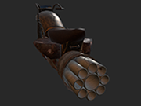
                                </a>
                            </div>
                            <div class="3u 12u$(mobile)">
                                <a href="today.html" class="hover">
                                    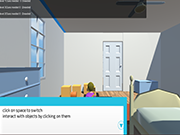
                                </a>
                            </div>
                            <div class="3u 12u$(mobile)">
                                <a href="#highway" class="hover">
                                    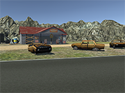
                                </a>
                            </div> 
                            <div class="3u 12u$(mobile)">
                                <a href="#cave" class="hover">
                                    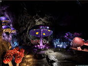
                                </a>
                            </div>
                            <div class="3u 12u$(mobile)">
                                <a href="#garden" class="hover">
                                    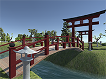
                                </a>
                            </div> 
                        </div>
                    </div>
                </section>
            </article> -->


            <!-- HALEF -->
            <article id="halef-art" class="panel">
                <header>
                    <h2>HALEF</h2>
                </header>
                <p>
                    Some work done for ETS to model, texture, rig, and animate 3D models.
                </p>
                <section>
                    <div class="inner gallery">
                        <div class="row">
                            <p> placeholder </p>
                        </div>
                        <a href="#art" class="jumplink pic">
                            <span class="arrow icon fa-chevron-left">
                                <span>Return</span>
                            </span>
                        </a>
                    </div>
                </section>
            </article>

            <!-- Cave -->
            <article id="cave" class="panel">
                <header>
                    <h2>Cave</h2>
                </header>
                <p>
                    Made in a short time for a self-study with Unreal Engine in 2018. Thanks to Unreal and user
                    altermind on the Unreal forums
                    for the free assets.
                </p>
                <section>
                    <div class="inner gallery">
                        <div class="row">
                            <div class="3u 12u$(mobile)">
                                <a href="images/cave/5.jpg" target="_blank" class="hover">
                                    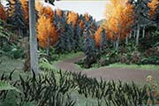
                                </a>
                            </div>
                            <div class="3u 12u$(mobile)">
                                <a href="images/cave/3.jpg" target="_blank" class="hover">
                                    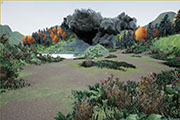
                                </a>
                            </div>
                            <div class="3u 12u$(mobile)">
                                <a href="images/cave/7.jpg" target="_blank" class="hover">
                                    
                                </a>
                            </div>
                            <div class="3u 12u$(mobile)">
                                <a href="images/cave/9.jpg" target="_blank" class="hover">
                                    
                                </a>
                            </div>
                        </div>
                        <a href="#art" class="jumplink pic">
                            <span class="arrow icon fa-chevron-left">
                                <span>Return</span>
                            </span>
                        </a>
                    </div>
                </section>
            </article>

            <!-- Bike -->
            <article id="bike" class="panel">
                <header>
                    <h2>Bike</h2>
                </header>
                <p>
                    A bike from a post-apocalyptic future. Made with Blender and Quixel, imported into Unity3D -- 2016.
                </p>
                <section>
                    <div class="inner gallery">
                        <div class="row">
                            <div class="3u 12u$(mobile)">
                                <a href="images/art/bikecap2.png" target="_blank" class="hover">
                                    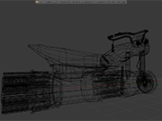
                                </a>
                            </div>
                            <div class="3u 12u$(mobile)">
                                <a href="images/art/bikecap3.png" target="_blank" class="hover">
                                    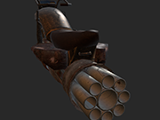
                                </a>
                            </div>
                            <div class="3u 12u$(mobile)">
                                <a href="images/art/bikecap4.png" target="_blank" class="hover">
                                    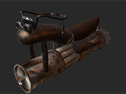
                                </a>
                            </div>
                            <div class="3u 12u$(mobile)">
                                <a href="images/art/bikecap5.png" target="_blank" class="hover">
                                    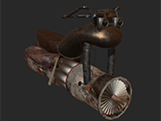
                                </a>
                            </div>
                        </div>
                        <a href="#art" class="jumplink pic">
                            <span class="arrow icon fa-chevron-left">
                                <span>Return</span>
                            </span>
                        </a>
                    </div>
                </section>
            </article>

            <!-- Garden -->
            <article id="garden" class="panel">
                <header>
                    <h2>Japanese Garden</h2>
                </header>
                <p>
                    Made using Blender, Photoshop, and Unity3D -- 2016.
                </p>
                <section>
                    <div class="inner gallery">
                        <div class="row">
                            <div class="3u 12u$(mobile)">
                                <a href="images/art/bridgescreencap.png" target="_blank" class="hover">
                                    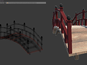
                                </a>
                            </div>
                            <div class="3u 12u$(mobile)">
                                <a href="images/art/gardenscreencap1.png" target="_blank" class="hover">
                                    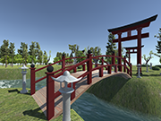
                                </a>
                            </div>
                            <div class="3u 12u$(mobile)">
                                <a href="images/art/gardenscreencap2.png" target="_blank" class="hover">
                                    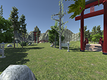
                                </a>
                            </div>
                            <div class="3u 12u$(mobile)">
                                <a href="images/art/toriiscreencap.png" target="_blank" class="hover">
                                    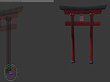
                                </a>
                            </div>
                        </div>
                        <a href="#art" class="jumplink pic">
                            <span class="arrow icon fa-chevron-left">
                                <span>Return</span>
                            </span>
                        </a>
                    </div>
                </section>
            </article>

            <!-- Highway -->
            <article id="highway" class="panel">
                <header>
                    <h2>Abandoned Highway</h2>
                </header>
                <p>
                    Made in collaboration with a classmate. I was responsible for the scene composition, terrain, gas
                    station, and highway. Made
                    using Blender, Photoshop, Quixel, and Unity3D -- 3 weeks, 2016.
                </p>
                <section>
                    <div class="inner gallery">
                        <div class="row">
                            <div class="3u 12u$(mobile)">
                                <a href="images/art/highwaycap.png" target="_blank" class="hover">
                                    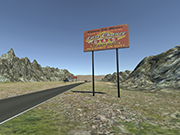
                                </a>
                            </div>
                            <div class="3u 12u$(mobile)">
                                <a href="images/art/highwaycap2.png" target="_blank" class="hover">
                                    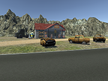
                                </a>
                            </div>
                            <div class="3u 12u$(mobile)">
                                <a href="images/art/highwaycap3.png" target="_blank" class="hover">
                                    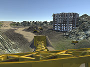
                                </a>
                            </div>
                        </div>
                        <a href="#art" class="jumplink pic">
                            <span class="arrow icon fa-chevron-left">
                                <span>Return</span>
                            </span>
                        </a>
                    </div>
                </section>
            </article>

            <!-- Contact -->
            <article id="contact" class="panel">
                <header>
                    <h2>About</h2>
                </header>

                <p>
                    I'm a coder, designer, and creative with a love for games and media.
                    I spend my time creating new experiences and exploring what's already out there. I’ve been
                    playing games my whole life, and for the past 5 or so years have pursued a career in creating them,
                    finishing solo,
                    school, and professional projects with a multitude of responsibilities. I specialize systems design,
                    ux, and programming. I've worked mainly with C#, Python, C++, Javascript, and HTML/CSS.
                </p>
                <p>I've been involved with esports since 2006, and I feel that this experience has helped to
                    shape my view
                    of game design. As a competitive player in titles like Street Fighter, Dota, and Starcraft, I can
                    understand
                    how, through my familiarity with their systems, mechanics affect the balance of a game on a deep
                    level.
                    I feel that my familiarity with the competitive scene across many different titles has helped me to
                    become
                    a better designer.
                </p>
                <p>I was the deputy chair of the local IGDA chapter (DC) until I moved in the spring of 2018.
                    During my
                    time in DC, I helped to run local game events (SAAM Arcade, GGJ, P3M5 @ the Goethe Institute). I'm
                    currently
                    working as a Software Developer and Researcher for Educational Testing Services in San Francisco, a
                    role which
                    I was hired into after completing my MA in Game Design (2018) at American University.
                    My BA was obtained in Philosophy from SUNY Purchase in 2013.
                </p>
                <p>Cheers! </p>
                <aboutHeader>
                    <h4>Contact</h4>
                    <h4>Email</h4>
                    <h4>Resume</h4>
                </aboutHeader>
                <div>
                    <p align="left">
                        <a href="https://www.linkedin.com/in/kirby-cofino-7324a9135/" target="_blank"
                            class="jumplink pic">
                            
                        </a>
                        <a href="https://twitter.com/Kirby_Cofino" target="_blank" class="jumplink pic">
                            
                        </a>
                        <a align="left" style="padding-left: 18%">
                            
                        </a>
                        <a href="images/Kirby Cofino Resume.pdf" target="_blank" class="jumplink pic"
                            style="padding-left: 27%">
                            
                        </a>
                    </p>
                </div>
            </article>
        </div>

        <!-- Footer -->
        <div id="footer">
            <ul class="copyright">
                <li>&copy; Kirby Cofino</li>
                <li>Design:
                    <a href="http://html5up.net">HTML5 UP</a>
                </li>
                <li>Resume Icon: Gregor Cresnar</li>
            </ul>
        </div>


        <!-- Scripts -->
        <script src="assets/js/jquery.min.js"></script>
        <script src="assets/js/skel.min.js"></script>
        <script src="assets/js/skel-viewport.min.js"></script>
        <script src="assets/js/util.js"></script>
        <!--[if lte IE 8]><script src="assets/js/ie/respond.min.js"></script><![endif]-->
        <script src="assets/js/main.js"></script>
    </div>
</body>

</html>